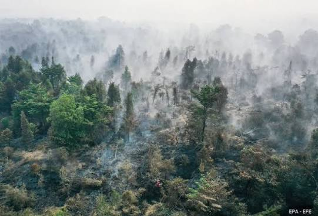

ENV-001
Udara
Pemantauan Kualitas Udara
Mengamati partikulat dan perubahan parameter kualitas udara di sekitar fasilitas.
Parameter: PM2.5
Nilai simulasi: 12 µg/m³
Fungsi: Mengidentifikasi perubahan partikulat udara.